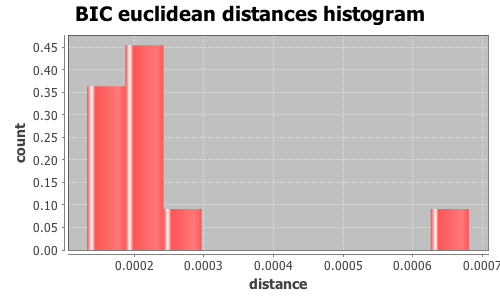
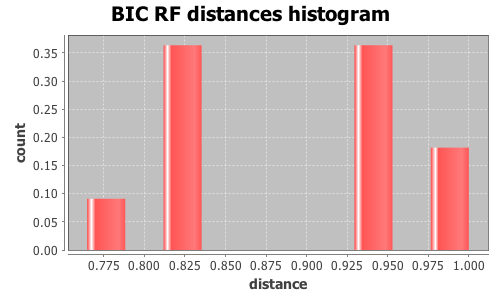

Application Meta
jModeltest 2.1
(c) 2011-onwards D. Darriba, G.L. Taboada, R. Doallo and D. Posada,(1) Department of Biochemistry, Genetics and Immunology
University of Vigo, 36310 Vigo, Spain.
(2) Department of Electronics and Systems
University of A Coruna, 15071 A Coruna, Spain.
e-mail: ddarriba@udc.es, dposada@uvigo.es
Wed Nov 16 20:40:31 CET 2016
Mac OS X 10.12, arch: x86_64, bits: 64, numcores: 4
| Citation: | Darriba D, Taboada GL, Doallo R and Posada D. 2012. "jModelTest 2: more models, new heuristics and parallel computing". Nature Methods 9, 772. |
 Back to top
Back to top Settings
Arguments = -d results/topaza_allele_alignments_selections/random_150/uce-4509_phased.nexus -i -g 4 -s 3 -BICInput Alignment: "results/topaza_allele_alignments_selections/random_150/uce-4509_phased.nexus"
NumTaxa = 20
Length = 693
Phyml version = 3.0
Phyml binary = PhyML_3.0_macOS_i386
Candidate models = 12
number of substitution schemes = 3
including only models with equal base frequencies
including models with/without a proportion of invariable sites (+I)
including models with/without rate variation among sites (+G) (nCat = 4)
Optimized free parameters (K) = Substitution parameters + 37 branch lengths + topology
Base tree for likelihood calculations = Maximum Likelihood
Tree topology search operation = Best of {NNI, SPR}
Model Optimization Results
| ID | Name | Partition | -lnL | p | fA | fC | fG | fT | ti/tv | R(a) | R(b) | R(c) | R(d) | R(e) | R(f) | p-inv | shape |
|---|---|---|---|---|---|---|---|---|---|---|---|---|---|---|---|---|---|
| 1 | JC | 000000 | 1091.6223 | 38 | - | - | - | - | - | - | - | - | - | - | - | - | - |
| 2 | JC+I | 000000 | 1090.4243 | 39 | - | - | - | - | - | - | - | - | - | - | - | 0.5000 | - |
| 3 | JC+G | 000000 | 1089.0657 | 39 | - | - | - | - | - | - | - | - | - | - | - | - | 0.0240 |
| 4 | JC+I+G | 000000 | 1088.5532 | 40 | - | - | - | - | - | - | - | - | - | - | - | 0.3650 | 0.0120 |
| 5 | K80 | 010010 | 1088.7178 | 39 | - | - | - | - | 1.5800 | - | - | - | - | - | - | - | - |
| 6 | K80+I | 010010 | 1083.7075 | 40 | - | - | - | - | 2.1525 | - | - | - | - | - | - | 0.9260 | - |
| 7 | K80+G | 010010 | 1084.9094 | 40 | - | - | - | - | 2.0476 | - | - | - | - | - | - | - | 0.0240 |
| 8 | K80+I+G | 010010 | 1087.9984 | 41 | - | - | - | - | 1.7929 | - | - | - | - | - | - | 0.5590 | 0.0110 |
| 9 | SYM | 012345 | 1085.0772 | 43 | - | - | - | - | - | 1.4894 | 6.2081 | 0.5407 | 0.6601 | 1.9626 | 1.0000 | - | - |
| 10 | SYM+I | 012345 | 1084.3044 | 44 | - | - | - | - | - | 3.6384 | 8.8989 | 0.7248 | 0.1925 | 2.4798 | 1.0000 | 0.9420 | - |
| 11 | SYM+G | 012345 | 1082.5908 | 44 | - | - | - | - | - | 1.5850 | 6.6345 | 0.5690 | 0.6268 | 2.0090 | 1.0000 | - | 0.0230 |
| 12 | SYM+I+G | 012345 | 1081.9739 | 45 | - | - | - | - | - | 1.6114 | 6.6748 | 0.5831 | 0.5914 | 2.0521 | 1.0000 | 0.3720 | 0.0110 |
There are 11 different topologies. The following table shows the models supporting each topology and the rank according to each Information Criterion, as well as Robinson-Foulds and Euclidean distances with the tree of the best-fit model.
| ID | Models | Topology | AIC | BIC | AICc | DT | |
|---|---|---|---|---|---|---|---|
| 0 |
K80+I
|
RANK | - | 0 | - | - | |
| Weight | - | 0.5281 | - | - | |||
| RF | - | 0 | - | - | |||
| AVG Distance | - | 0.0000e+00 | - | - | |||
| Distance VAR | - | 0.0000e+00 | - | - | |||
| 1 |
SYM
|
RANK | - | 1 | - | - | |
| Weight | - | 0.0000 | - | - | |||
| RF | - | 26 | - | - | |||
| AVG Distance | - | 4.8545e-03 | - | - | |||
| Distance VAR | - | 0.0000e+00 | - | - | |||
| 2 |
JC+G K80+G
|
RANK | - | 2 | - | - | |
| Weight | - | 0.2242 | - | - | |||
| RF | - | 28 | - | - | |||
| AVG Distance | - | 4.4998e-03 | - | - | |||
| Distance VAR | - | 1.6270e-10 | - | - | |||
| 3 |
SYM+G
|
RANK | - | 3 | - | - | |
| Weight | - | 0.0000 | - | - | |||
| RF | - | 28 | - | - | |||
| AVG Distance | - | 5.3943e-03 | - | - | |||
| Distance VAR | - | 0.0000e+00 | - | - | |||
| 4 |
SYM+I+G
|
RANK | - | 4 | - | - | |
| Weight | - | 0.0000 | - | - | |||
| RF | - | 28 | - | - | |||
| AVG Distance | - | 6.4267e-03 | - | - | |||
| Distance VAR | - | 0.0000e+00 | - | - | |||
| 5 |
JC+I+G
|
RANK | - | 5 | - | - | |
| Weight | - | 0.0042 | - | - | |||
| RF | - | 32 | - | - | |||
| AVG Distance | - | 6.3747e-03 | - | - | |||
| Distance VAR | - | 0.0000e+00 | - | - | |||
| 6 |
K80
|
RANK | - | 6 | - | - | |
| Weight | - | 0.0927 | - | - | |||
| RF | - | 32 | - | - | |||
| AVG Distance | - | 6.4014e-03 | - | - | |||
| Distance VAR | - | 0.0000e+00 | - | - | |||
| 7 |
K80+I+G
|
RANK | - | 7 | - | - | |
| Weight | - | 0.0003 | - | - | |||
| RF | - | 32 | - | - | |||
| AVG Distance | - | 7.0420e-03 | - | - | |||
| Distance VAR | - | 0.0000e+00 | - | - | |||
| 8 |
SYM+I
|
RANK | - | 8 | - | - | |
| Weight | - | 0.0000 | - | - | |||
| RF | - | 32 | - | - | |||
| AVG Distance | - | 8.4768e-03 | - | - | |||
| Distance VAR | - | 0.0000e+00 | - | - | |||
| 9 |
JC
|
RANK | - | 9 | - | - | |
| Weight | - | 0.1337 | - | - | |||
| RF | - | 34 | - | - | |||
| AVG Distance | - | 2.3153e-02 | - | - | |||
| Distance VAR | - | 0.0000e+00 | - | - | |||
| 10 |
JC+I
|
RANK | - | 10 | - | - | |
| Weight | - | 0.0168 | - | - | |||
| RF | - | 34 | - | - | |||
| AVG Distance | - | 6.8119e-03 | - | - | |||
| Distance VAR | - | 0.0000e+00 | - | - |
BIC Selection Results
Model selected
| Model | K80+I | ||
|---|---|---|---|
| partition | 010010 | ||
| -lnL | 1083.7075 | ||
| K | 40 | ||
| freqA | - | R(a) | - |
| freqC | - | R(b) | - |
| freqG | - | R(c) | - |
| freqT | - | R(d) | - |
| ti/tv | 2.1525 | R(e) | - |
| R(f) | - | ||
| p-inv | 0.9260 | gamma | - |
Best model tree
(Florisuga_0:0.00000000,Florisuga_1:0.00000003,((T_pyra3_0:0.00000002,(T_pyra4_0:0.00000001,(T_pyra4_1:0.00000000,(T_pyra1_0:0.00000002,T_pyra2_0:0.00157764):0.00148661):0.00000001):0.00000001):0.00141807,(T_pyra2_1:0.00000002,(T_pella5_1:0.00000000,(T_pella7_0:0.00000000,(T_pella8_1:0.00296879,(T_pyra1_1:0.00000001,(T_pella5_0:0.00000001,(T_pella7_1:0.00162408,(T_pella9_1:0.00000001,((T_pyra3_1:0.00000001,(T_pella9_0:0.00000001,(T_pella6_1:0.00000001,T_pella6_0:0.00000000):0.00000003):0.00000010):0.00148213,T_pella8_0:0.00000000):0.00000000):0.00000000):0.00000001):0.00000001):0.00000000):0.00000000):0.00000003):0.00153475):0.00000002):0.01712004);
Display best model tree in PhyloWidget
| Model | -lnL | K | BIC | delta | weight | cumWeight |
|---|---|---|---|---|---|---|
| K80+I | 1083.7075 | 40 | 2429.0561 | 0.0000 | 0.5281 | 0.5281 |
| K80+G | 1084.9094 | 40 | 2431.4599 | 2.4038 | 0.1588 | 0.6869 |
| JC | 1091.6223 | 38 | 2431.8037 | 2.7476 | 0.1337 | 0.8206 |
| K80 | 1088.7178 | 39 | 2432.5358 | 3.4797 | 0.0927 | 0.9133 |
| JC+G | 1089.0657 | 39 | 2433.2316 | 4.1755 | 0.0655 | 0.9787 |
| JC+I | 1090.4243 | 39 | 2435.9488 | 6.8927 | 0.0168 | 0.9956 |
| JC+I+G | 1088.5532 | 40 | 2438.7475 | 9.6914 | 0.0042 | 0.9997 |
| K80+I+G | 1087.9984 | 41 | 2444.1789 | 15.1228 | 0.0003 | 1.0000 |
| SYM | 1085.0772 | 43 | 2451.4187 | 22.3626 | 0.0000 | 1.0000 |
| SYM+G | 1082.5908 | 44 | 2452.9870 | 23.9309 | 0.0000 | 1.0000 |
| SYM+I | 1084.3044 | 44 | 2456.4142 | 27.3581 | 0.0000 | 1.0000 |
| SYM+I+G | 1081.9739 | 45 | 2458.2941 | 29.2380 | 0.0000 | 1.0000 |
| -lnL: | negative log likelihod |
| K: | number of estimated parameters |
| BIC: | Bayesian Information Criterion |
| delta: | BIC difference |
| weight: | BIC weight |
| cumWeight: | cumulative BIC weight |
Confidence interval
There are 12 models in the 100.00% confidence interval:
K80+I K80+G JC K80 JC+G JC+I JC+I+G K80+I+G SYM SYM+G SYM+I SYM+I+G

Euclidean distances histogram from each model optimized tree to K80+I tree.
Euclidean distances histogram from each model optimized tree to K80+I tree.

Relative Robinson-Foulds distances histogram from the different topologies to K80+I topology.
Relative Robinson-Foulds distances histogram from the different topologies to K80+I topology.